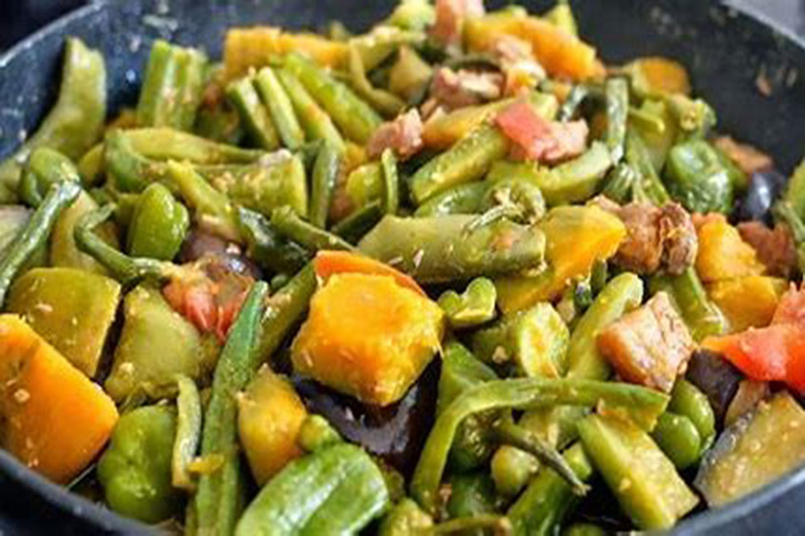

Description
Pinakbet (also called pakbet or pinak bet) is an indigenous Filipino dish from the northern regions of the Philippines. Pinakbet is made from mixed vegetables sautéed in fish or shrimp sauce. Most of these vegetables are easily accessible and are grown in backyards and gardens of most Ilocano households.
- ¼ kilo pork with fat, cut into small pieces
- 2 Amapalaya (bitter melons) sliced to bite size pieces
- 2 eggplants, sliced to bite size pieces
- 5 pieces of okra, cut in two
- 1 head garlic, minced
- 2 onions, diced
- 5 tomatoes, sliced
- 1 tablespoon of ginger, crushed and sliced
- 4 tablespoons bagoong isda or bagoong alamang
- 3 tablespoons of oil
- 1½ cup water
- Salt and pepper to taste
- Saute pork in a preheated pot with cooking oil. Render the fat then add garlic,
ginger and onion.
- Put in the anchovy sauce and wait for the mixture to boil.
- add the vegetables: okra, bitter melon, eggplant, string beans, and tomatoes.
- Cover the pot and let it simmer for 15 minutes
|